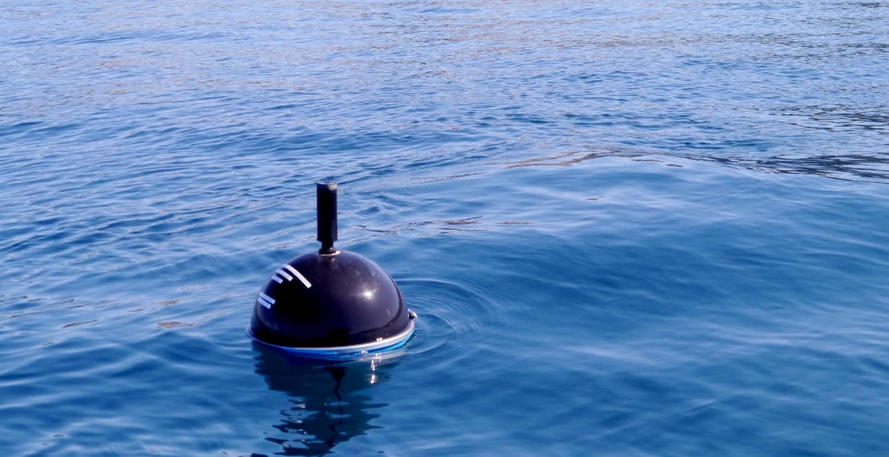
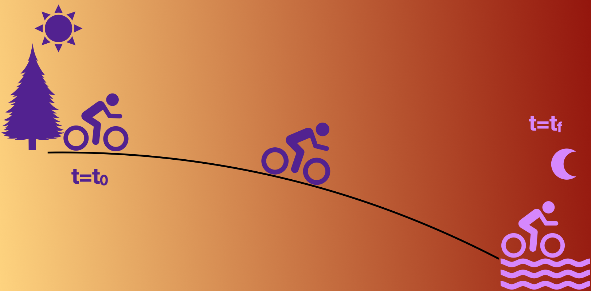

class: center, middle <br/><br/> .title[Dinámica de Fluidos Geofísicos] .subtitle[Clase 04 - Repaso de dinámica de fluidos] <br/><br/> .author[Semestre 2022-I] .institution[Facultad de Ciencias] <br/> .date[29 de septiembre de 2021] <br/><br/> <img style="width:100%" src="./figures/green_waves.png"> <!-- .note[Created with [{Liminal}](https://github.com/jonathanlilly/liminal) using [{Remark.js}](http://remarkjs.com/) + [{Markdown}](https://github.com/adam-p/markdown-here/wiki/Markdown-Cheatsheet) + [{KaTeX}](https://katex.org)] --> --- name: toc class: left <img style="width:40%" src="./figures/ink.jpg"> #Contenido 1. [Consideraciones básicas](#notas) 1. [Conservación de masa](#masa) 1. [Conservación de momento](#momento) 1. [Ecuación de Navier-Stokes](#navier) 1. [Aproximación hidrostática](#hidrostatica) 1. [Resumen](#resumen) <!-- Comment out the next slide if you don't want the Table of Contents link --> --- layout: true .toc[[✧](#toc)] --- name: notas class: left # Consideraciones básicas ## ¿Qué es un fluido? Definición útil: *Un material que no puede permanecer inmóvil bajo la acción de fuerzas que actúan para deformarlo pero mantienen su volumen constante.* --- class:left ## Hipótesis del continuo Escala macroscópica >> espacio interatómico <img style="width:30%" src="./figures/faucet.jpg"> --- class:left ## Hipótesis del continuo Promediamos en escalas mucho mayores que el espacio entre átomos pero menores que la escala de interés. Esto nos permite definir un *continuo* de propiedades que varían continuamente en las escalas de interés. Por ejemplo: Podemos definir la temperatura como función de la posición y del tiempo, $T=T(\vec{x},t)$. --- class: left ## Elemento de fluido Es un pedazo o porción arbitrariamente pequeña del continuo que nos facilita entender cómo se comporta un fluido. Es una construcción conceptual, no física, en la que asumimos que: 3. su volumen es tan pequeño que sus propiedades son uniformes; 2. tiene masa constante (usualmente); 1. se mueve bajo la influencia del fluido que lo rodea. --- class: left ## Cinemática: ¿Cómo vamos a describir al fluido? Describir el movimiento de un objeto pequeño, como una piedra, es relativamente sencillo. Podemos seguir la trayectoria del centro de masas como una función $\vec{x}=\vec{x}(t)$ y relacionar las fuerzas que actúan sobre la piedra con la velocidad y aceleración a partir de nuestro conocimiento de $\vec{x}(t)$. La descripción de un fluido no es tan simple. El fluido está en todos lados. No nos interesa la trayectoria del centro de masas sino el movimiento del continuo, constituido por una inifindad de elementos de fluido. En general hay dos métodos útiles: **Descripción euleriana** **Descripción lagrangiana** --- class: center ## Analogía entre descripciones <img style="width:90%" src="./figures/euler_vs_lagrange_dibujo.png"> --- class: left ## Descripción euleriana .left-column[Fluido en espacio 3D y tiempo. Podemos describir una propiedad $P$ como función del vector de posición $\vec{x} = (x, y, z)$ y el tiempo, $P=P(\vec{x},t)$. Descripción de P en cada punto y para cada tiempo sin especificar qué elemento de fluido ocupa qué posición a un tiempo dado$^1$.footnote[$1.$ E.g. Ve a [nvs.nanoos.org](http://nvs.nanoos.org/) para ver ejemplos de series de tiempo de "plataformas fijas".]. * Anemómetro fijo * Corrientímetro] .right-column[ </br> <img style="width:70%" src="./figures/mooring_schematic.jpg"> ] --- class: left ## Descripción lagrangiana .left-column[ "Monitorea" elementos de fluido individuales y especifica las propiedades con respecto a cada elemento. Descripción del flujo siguiendo a cada partícula de fluido. Ejemplos de mediciones lagrangianas: * Drifters o flotadores en el océano$^2$.footnote[$2.$ Por ejemplo: Flotadores del Lagrangian Drifter Lab del Global Drifter Program de NOAA [en vivo](https://gdp.ucsd.edu/apps/projects/noaa/global-drifter-program.html)] * Radiosondas atmosféricas (más o menos)] .right-column[ </br> ] --- class: left ## Tasas de cambio Imagina que viajas de Cuernavaca al Puerto de Veracruz en bicicleta. En el camino notarás un cambio de temperatura. Esto puede ser debido a que la temperatura cambió en el tiempo (hora del día, fenómeno meteorológico, etc) o a que atravesamos un gradiente espacial de temperatura (altitud, vegetación, etc.). .center[] Veremos 3 nociones de tasa de cambio: 1. Cambio temporal local (tasa de cambio en un punto fijo), 2. tasa de cambio de un observador en movimiento y 3. tasa de cambio de un elemento de fluido dentro del flujo. --- class: left ## Tasa de cambio local Definimos la tasa de cambio de una propiedad $P$ con respecto al tiempo en un punto fijo $\vec{x}$ como: $$\textrm{Derivada temporal local} = {\frac{\partial P}{\partial t}}\Big|_{\vec{x}}$$ Regularmente omitimos el subíndice $\vec{x}$. Podemos ver esto como el cambio de $P$ conforme una serie de elementos de fluido pasan por el punto $\vec{x}$. --- class: left ## Tasa de cambio de un observador en movimiento Volvamos a la ciclista viajando a Veracruz. Digamos que se mueve a velocidad $\vec{v}=(v_1,v_2,v_3)$ distinta al fluido (aire), de manera que para ella $\vec{v}=d\vec{x}/dt$. El cambio **total** en la propiedad $P$ medido por la ciclista es: $$\frac{dP}{dt}=\frac{\partial P}{\partial t} + \frac{\partial P}{\partial x}\frac{dx}{dt} + \frac{\partial P}{\partial y}\frac{dy}{dt} + \frac{\partial P}{\partial z}\frac{dz}{dt}$$ $$\frac{dP}{dt}=\frac{\partial P}{\partial t}+\vec{v}\cdot\nabla P$$ --- class: left ## Ejemplo: Tasa de cambio de la altura sobre el piso de una niña que baja por una resbaladilla. --- class: left ## Tasa de cambio de un elemento de fluido dentro del flujo El "observador" ahora es el mismo flujo, que se mueve con la misma velocidad que el fluido, $\vec{u}$. La tasa de cambio es simplemente la tasa de cambio de la propiedad $P$ del propio elemento de fluido: $$\frac{DP}{Dt}=\frac{\partial P}{\partial t}+\vec{u}\cdot\nabla P$$. A esta tasa de cambio se le conoce como *derivada material* o *derivada total*. --- class: left ## Ejemplo: Propiedad cuya distribución está dada por $P=P_0\cos{\omega t}\sin{kx}$, donde $\omega=2\pi/T$ es la frecuencia de la onda y $k=2\pi/\lambda_x$ es el número de onda en dirección $x$. Supongamos que el flujo es únicamente en dirección $x$ con magnitud $U$. (pizarrón) --- name: masa class: left # Conservación de masa Intuitivamente: Cambio en la masa dentro de la cubeta es igual a la masa de agua que sale de la cubeta. <img style="width:90%" src="./figures/cons_masa.jpg"> --- class: left Vamos a las notas (derivación consevación de masa) --- class: left # Ecuación de conservación de masa $$\frac{D\rho}{Dt}+\rho\nabla\cdot\vec{u}=0$$ El cambio local en la masa dentro de un volumen de control se compensa con la divergencia local del flujo de masa en el volumen. En un *fluido incompresible* $\rho$ es constante, por lo que $D\rho/ Dt=0$ y la ecuación de continuidad queda como: $$\nabla\cdot\vec{u}=0.$$ --- name: momento class: left # Ecuación de conservación de momento Expresión de la segunda ley de newton para un fluido $$F=d\vec{p}/dt\approx m\vec{a}.$$ **Fuerzas en un fluido:** * de cuerpo: Actúan directamente sobre la masa del elemento y se distribuyen sobre todo el volúmen. Ej. gravitacional, electromagnética (si el fluido es conductor). $$\vec{F}_{cuerpo} = m\vec{g} = \int_V dV\rho\vec g$$ --- class: left **Fuerzas en un fluido:** * de superficie: Actúan sobre la superfice, son direccionales. Ej. presión, esfuerzos cortantes. Tensor de esfuerzos: elementos en la diagonal, **presión**; fuera de la diagonal, **esfuerzos cortantes** $$\vec{F}_{superficie}=\int_S[\sigma]\cdot\hat{n}dS$$. --- class: left Vamos a las notas (derivación consevación de momento) --- class: left ## Ecuación de conservación de momento $$\rho\frac{D\vec{u}}{Dt}=\rho \vec{g} + \nabla\cdot[\sigma]$$ Esta expresión es cierta para cualquier fluido. ¡La física está guardada en el tensor de esfuerzos! **Relaciones constitutivas** Los esfuerzos $[\sigma_{ij}]$ son una combinación de presión $p$ y fricción viscosa: $$\sigma_{ii} = -p + \lambda \nabla \cdot \vec{v} + 2\mu\frac{\partial{u_i}}{\partial{x_i}}$$ $$\sigma_{ij} = \mu\Big(\frac{\partial u_i}{\partial{x_j}}+\frac{\partial u_j}{\partial{x_i}}\Big)$$ --- class: left **Relaciones constitutivas** Los esfuerzos $[\sigma_{ij}]$ son una combinación de presión $p$ y fricción viscosa: $$\sigma_{ii} = -p + \lambda \nabla \cdot \vec{v} + 2\mu\frac{\partial{u_i}}{\partial{x_i}}$$ $$\sigma_{ij} = \mu\Big(\frac{\partial u_i}{\partial{x_j}}+\frac{\partial u_j}{\partial{x_i}}\Big)$$ $\lambda$ y $\mu$ son los coeficientes de viscosidad dinámica y estática, respectivamente. ASUMIENDO que la **relación entre esfuerzo y gradientes de velocidad es lineal** (fluido Newtoniano) e **isotrópica** (las propiedades intrínsecas del fluido no tienen dirección preferencial). --- name: navier class: left # Ecuación de Navier-Stokes Si el flujo es incompresible, $\nabla\cdot\vec{v}=0$. Las ecuaciones constitutivas se simplifican: $$\sigma\_{ij} = -p \delta\_{ij} + \mu\Big(\frac{\partial u\_i}{\partial x\_j}+\frac{\partial u\_j}{\partial x\_i}\Big)$$ ($\delta\_{ij}=1$ si $i=j$, $\delta\_{ij}=0$ si $i\ne j$ ). Ahora podemos sustituir estas expresiones para las fuerzas superficiales en la ecuación de momento para obtener las ecuaciones incompresibles de Navier-Stokes. --- class: left ## Ecuaciones de Navier-Stokes Para los vectores $\vec{u} = (u,v,w)$, $\vec{x}=(x,y,z)$, $\vec{g}=(g_x, g_y, g_z)$, Continuidad: $$0 = \frac{\partial u}{\partial x}+ \frac{\partial v}{\partial y}+ \frac{\partial w}{\partial z}$$ Momento: $$\rho\frac{Du}{Dt}=\rho g_x-\frac{\partial p}{\partial x}+\mu\Big(\frac{\partial^2 u}{\partial x^2}+\frac{\partial^2 u}{\partial y^2}+\frac{\partial^2 u}{\partial z^2}\Big)$$ $$\rho\frac{Dv}{Dt}=\rho g_y-\frac{\partial p}{\partial y}+\mu\Big(\frac{\partial^2 v}{\partial x^2}+\frac{\partial^2 v}{\partial y^2}+\frac{\partial^2 v}{\partial z^2}\Big)$$ $$\rho\frac{Dw}{Dt}=\rho g_z-\frac{\partial p}{\partial z}+\mu\Big(\frac{\partial^2 w}{\partial x^2}+\frac{\partial^2 w}{\partial y^2}+\frac{\partial^2 w}{\partial z^2}\Big)$$ --- name: hidrostatica class: left # Aproximación hidrostática Primero, las componentes horizontales del vector gravedad son despreciables $\vec{g}\approx(0, 0, -g)$, Momento: $$\rho\frac{Du}{Dt}=-\frac{\partial p}{\partial x}+\mu\Big(\frac{\partial^2 u}{\partial x^2}+\frac{\partial^2 u}{\partial y^2}+\frac{\partial^2 u}{\partial z^2}\Big)$$ $$\rho\frac{Dv}{Dt}=-\frac{\partial p}{\partial y}+\mu\Big(\frac{\partial^2 v}{\partial x^2}+\frac{\partial^2 v}{\partial y^2}+\frac{\partial^2 v}{\partial z^2}\Big)$$ $$\boxed{\rho\frac{Dw}{Dt}=-\rho g-\frac{\partial p}{\partial z}+\mu\Big(\frac{\partial^2 w}{\partial x^2}+\frac{\partial^2 w}{\partial y^2}+\frac{\partial^2 w}{\partial z^2}\Big)}$$ --- class: left Cuando las escalas horizontales son mucho mayores que la vertical, la aceleración vertical $Dw/Dt$ es mucho menor que la aceleración gravitacional $g$, además las fuerzas viscosas son relativamente pequeñas: $$\cancel{\rho\frac{Dw}{Dt}}=-\rho g-\frac{\partial p}{\partial z}+\cancel{\mu\Big(\frac{\partial^2 w}{\partial x^2}+\frac{\partial^2 w}{\partial y^2}+\frac{\partial^2 w}{\partial z^2}\Big)}$$ El gradiente de presión compensa el peso (balance hidrostático): $$\rho g \approx \frac{\partial p}{\partial z}$$. --- class: left Para un flujo de densidad constante y superficie libre: <img style="width:60%" src="./figures/hidrostatica.png"> Integrando la ecuación anterior en la columna de fluido obtenemos que la presión en cualquier punto depende únicamente de la altura de la superficie libre $h(x,y)$: $$p(x,y) = p\_{atm}+ \rho g (z-h(x,y))$$ ¡Esto nos ahorra muchos cálculos en los modelos! --- name: resumen class: left ## Resumen de ecuaciones (incompresibles) Continuidad: $$0 = \frac{\partial u}{\partial x}+ \frac{\partial v}{\partial y}+ \frac{\partial w}{\partial z}$$ Momento: $$\rho\frac{Du}{Dt}=-\frac{\partial p}{\partial x}+\mu\Big(\frac{\partial^2 u}{\partial x^2}+\frac{\partial^2 u}{\partial y^2}+\frac{\partial^2 u}{\partial z^2}\Big)$$ $$\rho\frac{Dv}{Dt}=-\frac{\partial p}{\partial y}+\mu\Big(\frac{\partial^2 v}{\partial x^2}+\frac{\partial^2 v}{\partial y^2}+\frac{\partial^2 v}{\partial z^2}\Big)$$ $$\rho\frac{Dw}{Dt}=-\rho g-\frac{\partial p}{\partial z}+\mu\Big(\frac{\partial^2 w}{\partial x^2}+\frac{\partial^2 w}{\partial y^2}+\frac{\partial^2 w}{\partial z^2}\Big)$$ Aproximación hidrostática: $$\rho g \approx \frac{\partial p}{\partial z}$$. --- class: left # Referencias .caption[ Esta presentación está basada en las notas de clase de Prof. Stephanie Waterman (UBC) y Prof. Suzanne Fielding (Durham).] </br> </br> .caption[ Bibliografía adicional: P. K. Kundu y I. M.Cohen (2004) Fluid Mechanics, 3ra ed. Elsevier.] </br></br> .caption[Imágenes tomadas de Graham Richardson en flickr] .caption[(tinta azul), latintimes.com (Popocatépetl), learncax.com (elemento de fluido), wikicommons (afloramiento en Isla de Vancouver)] .caption[Lagrangian Drifter Lab SRIPPS (drifter), https://kinoshita.eti.br/2016/07/12/ (globo meteorológico), mayo05 getty images (anemómetro), Figura 1 en Bailey et al. (2019) Coastal Mooring Observing Networks and Their Data Products: Recommendations for the Next Decade (https://doi.org/10.3389/fmars.2019.00180) (esquemas anclajes costeros)]